Rijschool in Apeldoorn
Rustig de weg op.
Rijles bij Pascal zelf: geduldig, persoonlijk en gezellig. Of u nu net begint, overstapt of na jaren weer achter het stuur wilt.
4,8 uit 17 Google-reviews
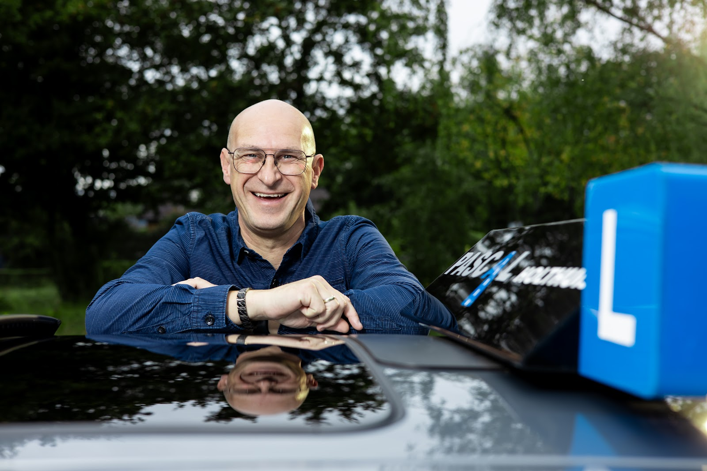
Waar staat u nu?
Iedereen komt met een eigen verhaal in de auto. Pascal kijkt wat u nodig heeft en past de lessen daarop aan.
Bespreek het even met Pascal-
U wilt uw rijbewijs halen
Van de eerste keer achter het stuur tot het examen. Pascal bouwt het stap voor stap op, in uw tempo, zodat u met een gerust gevoel examen doet.
"Vandaag mijn rijbewijs in 1x gehaald bij Pascal, een super instructeur."
-
U wilt overstappen van rijschool
Loopt het bij uw huidige rijschool niet lekker? Dan gaat u bij Pascal verder waar u gebleven bent, en werkt u gericht naar het examen toe.
"Na een paar lessen gaf hij mij het vertrouwen en plezier dat ik bij de andere rijscholen mistte."
-
U wilt weer durven rijden
Al jaren niet gereden, of onzeker geworden? Met een opfriscursus krijgt u rustig het vertrouwen terug om weer zelf de weg op te gaan.
"Had 14 jaar niet gereden en toen heb ik Pascal gebeld voor een opfriscursus. Na 5 lessen gaf hij mij het vertrouwen terug."
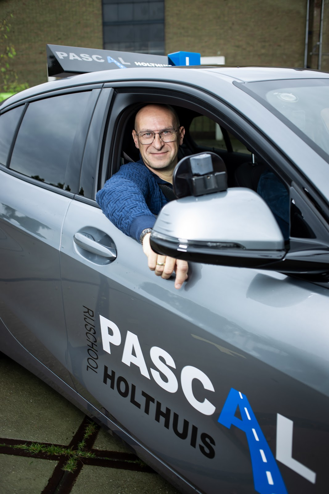
U krijgt les van Pascal zelf.
Geen wisselende instructeurs: bij deze rijschool zit Pascal elke les naast u. Hij leert u snel kennen, ziet waar u nog moeite mee heeft en daar gaat de volgende les over.
Leerlingen noemen hem geduldig, rustig en fijn in de communicatie. En in de auto is er ook ruimte voor gezelligheid. Wie ontspannen achter het stuur zit, leert het meest.
U rijdt in de herkenbare grijze lesauto met de blauwe weg op de deur, gewoon in Apeldoorn en omgeving.
- Google-score
- 4,8 uit 17 reviews
- Bereikbaar
- ma t/m vr
- 08:00 tot 18:00
Geslaagd met Pascal.
Elk rijbewijs is een feestje. Een paar trotse leerlingen bij de lesauto, net na het examen.
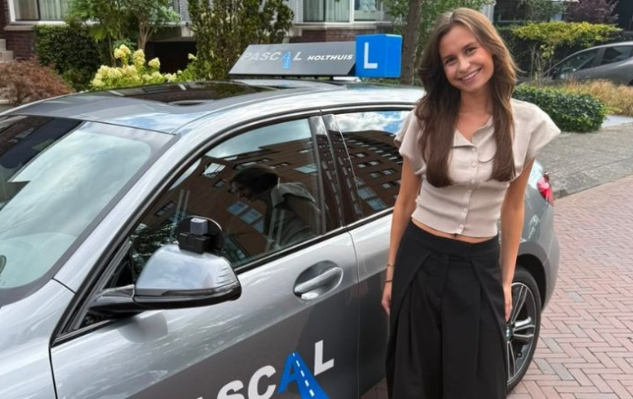
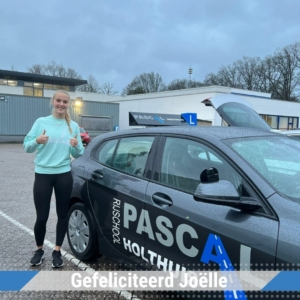
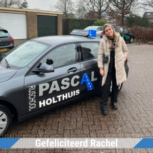
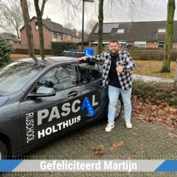
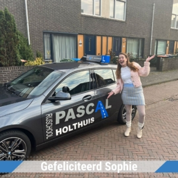
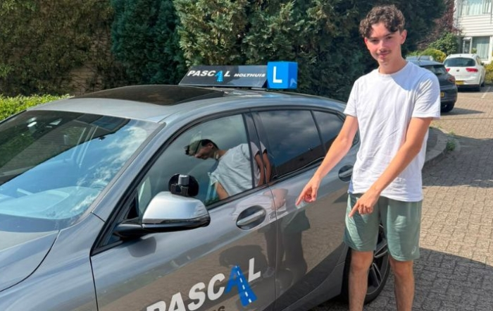
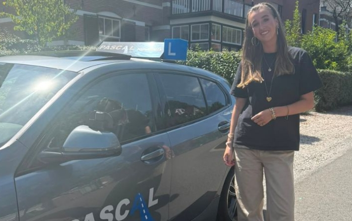
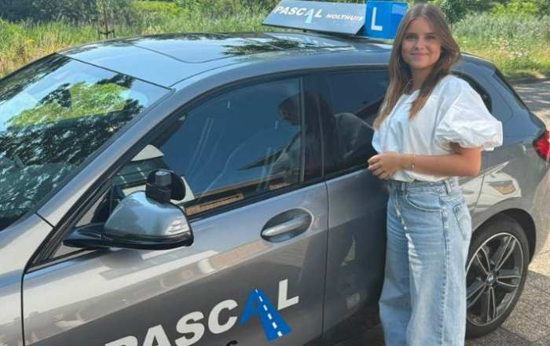
Wat leerlingen zeggen.
4,8 sterren uit 17 reviews op Google.
"Had 14 jaar niet gereden en toen heb ik Pascal gebeld voor een opfriscursus.
Na 5 lessen gaf hij mij het vertrouwen terug.
Hij geeft fijn rustig les echt een aanrader Pascal bedankt.
Met vriendelijke groet Lida Blom."
"Vandaag mijn rijbewijs gehaald, met dank aan Pascal. Wat een fijne lessen heb ik bij Pascal mogen volgen. Een echte aanrader voor persoonsgerichte, leerzame en gezellige lessen!"
"Na het switchen van rijschool hele goede begeleiding gekregen van Pascal en de puntjes op de i kunnen zetten, fijne instructeur en heel fijn in communicatie."
"Vandaag mijn rijbewijs in 1x gehaald bij Pascal, een super instructeur. Altijd erg geduldig met mij geweest en in de auto is er ook veel ruimte voor gezelligheid en daarmee ook een goede sfeer."
"Na jarenlang uitstellen toch weer begonnen met rijlessen, deze keer bij Pascal. Na een paar lessen gaf hij mij het vertrouwen en plezier dat ik bij de andere rijscholen mistte. Hij zag precies wat ik nodig had, en gaf les op een leuke en effectieve manier. Hij heeft me binnen no time klaargestoomd voor mijn examen die (...)"
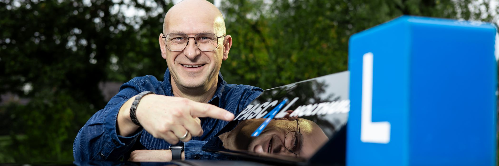
Begin met een kennismakingsles.
Rij een les mee en ervaar hoe Pascal lesgeeft. Daarna bespreekt u samen wat u nodig heeft. Bellen is het snelst.
06 46765945- info@pascalholthuis.nl
- Adres
- Thorbeckestraat 17
7331 RG Apeldoorn - Bereikbaar
-
Maandag t/m vrijdag 08:00 tot 18:00 Zaterdag en zondag Gesloten